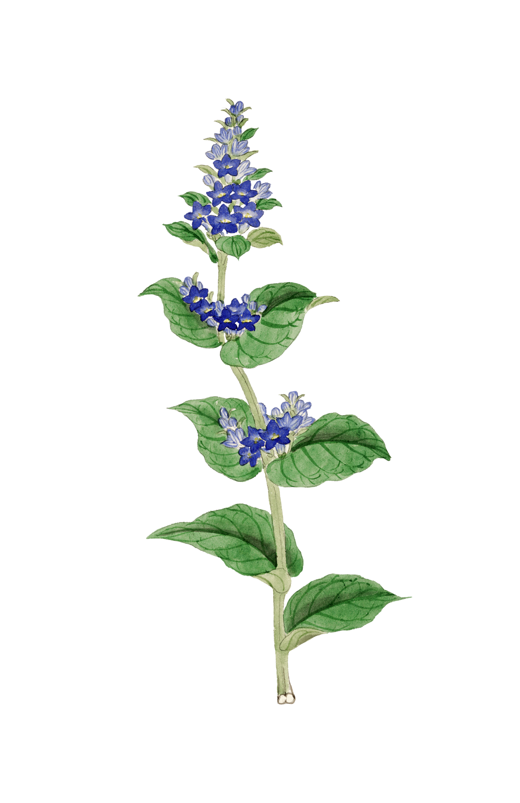

Nettle Soup

Ingredients
- 1 cup of fresh nettles (wear gloves when foraging!)
- 1 potato
- 1 onion or wild leek
- 1 clove of garlic
- Seasonal mushrooms (such as chanterelles or morels)
- Cooking fat or oil
- 4 cups or water or leftover broth
Utensils & Cookware
- A sharp blade and cutting board
- A mortar and pestle
- A large-sized cooking pot
- A heating element or open flame
- A bowl or thermos to enjoy your soup
Instructions
- Begin by harvesting the nettle leaves. Remember to wear gloves and to avoid areas that have been treated with pesticides and other chemicals. When finished, always remember to wash your foragables.
- Chop your potato and other roots and vegetables into bite-sized pieces. Mash your garlic into a smooth paste along with any herbs or aromatics of your choosing.
- In a large cooking pot, heat a hearty dollop of fat or oil and add your onions or leeks first so they soften.
- Next, add your garlic and be sure to stir so the foragables brown but don't burn.
- Lastly, add in your mushrooms or any greens you found in your harvest before topping everything off with the chopped potatoes.
- Pour enough water or broth over your vegetables to cover them and stir. Reduce the pot to a simmer and once the potatoes soften, you're ready to move on.
- Carefully pluck and chop the nettle leaves and add them to the pot. After 2 to 3 minutes, the leaves should soften.
- Transfer a portion the soup into a bowl or thermos and enjoy with your favorite herbs as a garnish!